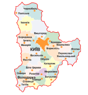
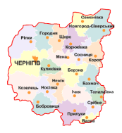
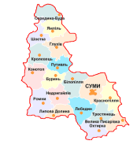
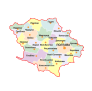
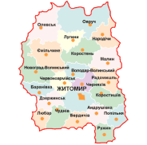
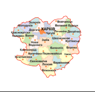
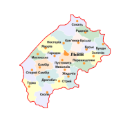
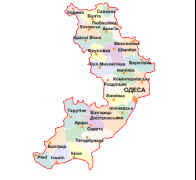

|
Київська область |
Чернігівська область |
Сумська область |
Полтавська область |
|  |  |  |  |
|
Житомирська область |
Харківська область |
Львівська область |
Одеська область |
|  |  |  |  |